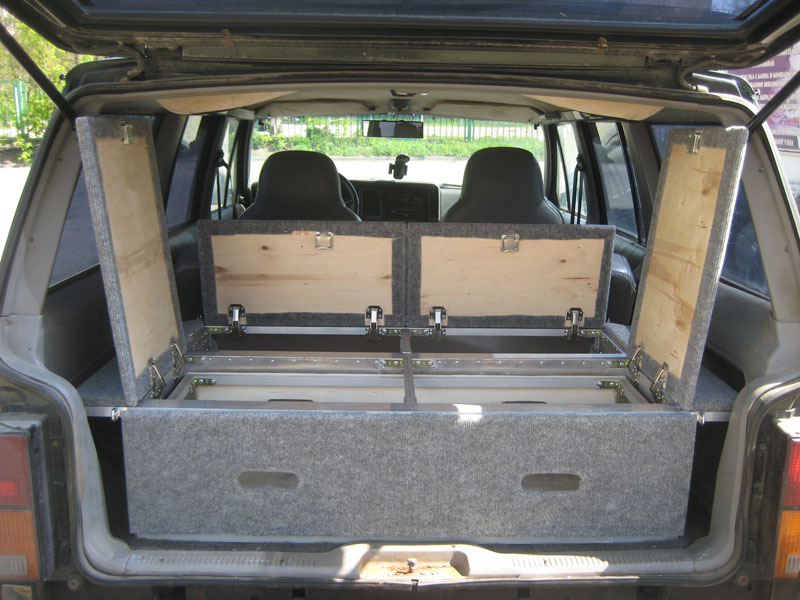
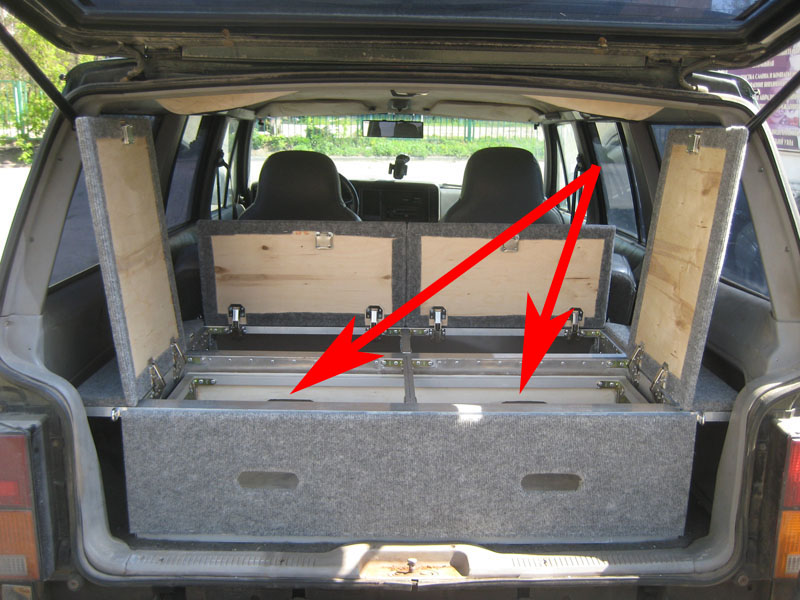

Проблема
Нужно разместить барахло в багажнике:
- вытаскивая одно, не нужно вытаскивать еще десять
- вытаскивать "сверху" также легко, как и "снизу"
- "верхнее" да не раздавит "нижнее"
- грязное да не испачкает чистое
Всякие матерчатые, пластмассовые, сетчатые и прочие "органайзеры" не прокатили в виду того, что "организовывать" приходилось уже их.
Вариант решения, заслуживающий внимания
Тут: Решение – Багажная полка с выдвижными ящиками- изготовление на заказ вот такой полки с выдвижными ящиками

- есть набор типовых комплектаций и вариантов исполнений
- под ваш багажник и с вашими пожеланиями
- вот подборка типичных фоток с сайта и форума
- варианты по размерам багажника: Что внутри?! Конструкция багажных полок
- на форуме представлены отчеты по изготовлению для множества автомобилей
Далее, чтобы не путаться в названиях, будем считать, что :
- Органайзер - все целиком
- Ящик - то, что выдвигается
- Рундук - то, что позади ящика и не выдвигается
- Полка - верхняя плоскость Органайзера, образованная крышками Ящика и Рундука
- Модель - проект Органайзера в SolidWorks
Подходит?
Для моего драндулета, Jeep Cherokee XJ, на форуме нашлась соответствующая тема.
Судя по ней, а также по тому, что XJ не является полноразмерным внедорожником, размеры его багажника не позволяют сделать полноценный Рундук, а длина получаемых Ящиков не позволяет размещать в них лопату удобной длины, топор и прочие полезные и любимые длинномеры. Конечно, их можно разметить поверх Полки, полностью использовав ширину, длину и диагональ багажника, но тогда проблема вытаскивания, например, лопаты из-под груды вещей и запихиванием ее обратно, да еще и грязной, снова оказывается нерешенной. Как вариант - использование одного широкого Ящика. Но тогда исчезает важная стойка по середине и возникает риск деформации профиля под нагрузкой. Однако, присутствие такого варианта - с широким Ящиком - в упомянутой выше подборке фоток свидетельствует о работоспособности данного подхода на практике.
Что хочется
- один, но максимально широкий Ящик - под длинномеры
- полноценный Рундук, т.е. имеющий верхний доступ - под полезные, но не очень часто используемые вещи (канистры, инструмент)
- определиться с высотой Полки: слишком низкая - в рундук и ящик влезет немного, слишком высокая - невозможно будет разместить сверху полки габаритную вещь (при том, что снизу полки будет свободно), а также крышки Ящика и Рундука при открытии начнут утыкаться в крышу
Немедленные следствия
- так как спинка дивана имеет наклон в багажник, то, чем длиннее Ящик и выше Полка, тем меньше площадь крышки Рундука и, следовательно, тем больше вещей не пройдут в Рундук по габаритам, хотя по объему они там свободно разместятся
- чем длиннее Ящик, тем больше риск деформации профиля под нагрузкой (отсутствует та самая срединная стойка)
- нужно иметь возможность "поиграть" длинной Ящика и высотой Полки, следя при этом за: "пролезанием" в Рундук какой-нибудь "характерной" вещи, размещением в ящике "характерной" вещи, размещением сверху полки "характерной" вещи, беспроблемным открытием крышек
Как бы дорого...
Мне озвучили сумму в 35-38 тыр (ориентировочно) на весну 2013 года.
Делаю сам!
Делаю максимальную копию органайзера с сайта с доработками под себя:
- один широкий выдвижной Ящик
- Рундук
- крышки над Рундуком откидываются к спинке дивана (влево-вправо не получится, если Полка ниже спинки дивана)
Максимальная копия означает повторение:
- типы профилей и их размеры
- типы уголков и их размеры
- типы крепежа
- тип фанеры и ее толщина
- тип обивки и как обито
- фурнитура (ручки, защелки)
- общая компоновка
- варианты соединения деталей и узлов
Максимальная копия гарантирует результат: "у них получилось - и у меня получится".
Что получилось
Сразу после изготовления
Фотографий сразу после изготовления сделано не было.
После года эксплуатации
Фото 1. Открыли и видим следующее.
{kind=link}
{kind=link}
Фото 3. Ящик выдвинут и вот он слева.
{kind=link}
{kind=link}
{kind=link}
Фото 6. Правый нижний угол Ящика изнутри.
{kind=link}
Фото 7. Вот так Ящик крепится к направляющим.
{kind=link}
Фото 8. Левое крыло Полки сзади. Рым-гайка упрощает использования стяжек для груза.
{kind=link}
Фото 9. Левое крыло Полки спереди. Такая же рым-гайка.
{kind=link}
Фото 10. Левое крыло Полки спереди.
{kind=link}
Фото 11. Крышки Ящика и Рундука в открытом состоянии.

{kind=link}
{kind=link}
{kind=link}
Фото 14. Правая крышка Рундука. Левая такая же.
{kind=link}
{kind=link}
Фото 16. Левая задняя стойка Рундука.
{kind=link}
Фото 17. Петля крышки крупным планом.
{kind=link}
Фото 18. Крышки открыты, Ящик задвинут.
{kind=link}
Фото 19. Крышки открыты, Ящик выдвинут.
{kind=link}
{kind=link}
Фото 21. Замок крышки крупным планом изнутри.
{kind=link}
Фото 22. Замок крышки крупным планом снаружи. Позелененная заклепка - это цветовой код для ключа.
{kind=link}
Фото 23. Левое крыло Полки открыто.
{kind=link}
Фото 24. Правое крыло Полки открыто.
{kind=link}
Фото 25. Правая защелка Ящика.
{kind=link}
Фото 26. Ее ответная часть на Полке.
{kind=link}
Фото 27. Поклали топор и лопату. Вполне.

Что можно и нужно было сделать по-другому: взгляд год спустя
Решение об изготовлении максимальной копии органайзера с сайта было правильным.
Однако, это привело к сознательному игнорированию изменений, улучшающих использование и упрощающих изготовление в нашем конкретном случае.
Перечислим их.
Две ручки сзади Ящика избыточны. Хватит и одной.

Две крышки Рундука нужно объединить в одну. Экономим 2 петли, 1 замок и 1 разрез по фанере и обивке.
После объединения крышек Рундука вот этот профиль оказывается не нужным. Нагрузки он никакой не несет, а экономим на нем 4 уголка и 16 сверлений. А главное - теперь можно класть в Рундук длинномеры!

Вот этот КРАСНЫЙ вырез в листе алюминия, делающий пол, не нужен. Вместо него делаем ЗЕЛЕНЫЙ и кладем лист поверх уголков. Хуже не будет, а резок по металлу и щелей в полу станет меньше.
Вот этот профиль слева не нужно было укорачивать - это я облажался при обмере. Точнее - при его отсутствии: почему-то подумалось, что слева в пластике есть выступ как раз напротив профиля, а это не так. Нужно было измерять, а не думать.
А всего-то нужно было обивать с заворотом по ЗЕЛЕНОМУ уровню, т.е. вообще не делать заворота на заднюю поверхность. При этом толщина обивки уже никакой роли не играет и она, обивка, производится после установок петель и замков. И никаких вырезов.

На этом профиле (и на таком же профиле Рундука) были установлены защелки (см. Фото 25 и 26) и их ответные части на крышках. Так вот - их больше нет. Ибо совершенно не понятно, для чего они нужны: крышки прекрасно закрываются гравитацией, а предотвратить открытие крышки под ударом тяжелого предмета изнутри при сотрясениях они не могут. Были удалены и заменены на почтовые замки. Тут и установка проще и защита лучше.
На крышках должны были быть ручки в виде петель из обивочного материала. Они как-то не понравились и вместо них поставили вот такие. А зря - торчащая часть сразу стала пытаться порвать лежащие сверху вещи, когда последние пытались снять волоком. На данный момент ручки удалены, а другие пока не сделаны (предполагаются тканевые шнурки в отверстия заклепок замков).
Проектирование
В качестве места для изготовления была доступна только открытая лоджия. Поэтому итеративный процесс - померить на машине, отрезать, приделать, снова померить на машине - оказался недоступен.
На бумаге
Проектирование на бумаге было сразу отметено как нежизнеспособное, ибо как быть с возможностью изменить в любой момент параметры материалов или размеры Ящика и Рундука? Тут нужен какой-нибудь CAD.
CAD'ы проектирования мебели
Первое, что пришло в голову - программы проектирования мебели. Скачал, попробовал, почитал мануалы, почитал отзывы. В общем, в отзывах пишут правильно: для типовой мебели - шкафы, тумбочки, столы, кровати - самое то. Само все расставит, распилит, просверлит - только параметры указывай. Выдаст файлы для станков и сборочную документацию. Но, как обычно, шаг в сторону - и начались "приседания". Нет, конечно, инструмент надо знать. Вполне возможно, что гуру данных программ сделал бы все быстрее и проще, чем я в конце-концов сделал в SolidWorks. Но на тот момент этот самый SolidWorks оказался мне приятнее и понятнее.
SolidWorks
Прочитал обзоры. Главное для нашего дела - параметризация - есть. Замечательно. Теперь надо как-то начать делать.
Уроки
Скачал разнообразные видеоуроки. Начал обучение по принципу "смотрим очередной урок - делаем как там". Это привело к тому, что переделывал три раза - хорошо еще, что сделано было мало. Отсюда мораль - надо было сначала просмотреть сразу все видеоуроки, чтобы составить мнение по различным подходам и выбрать из них наиболее подходящий, и только потом начинать делать.
Управляющий Эскиз
Основная идея подхода к моделированию с использованием Управляющего Эскиза в следующем: с помощью т.н. "справочной" геометрии - точек, линий, отрезков, плоскостей - рисуется каркас, на которой потом, как на ёлку, "навешиваются" детали-игрушки.
Справочная геометрия называется так потому, что не будет представлена в реальном мире, в отличии от деталей.
Каркас представляет собой оформленные в геометрическом виде требования к размерам модели. Например, одни плоскости в рассматриваемой модели задают габаритные размеры - все детали модели должны находится с одной стороны таких плоскостей и не должны выходить на другую (дно, спинка дивана - вот самые явные их них). Другие - некоторые симметрии модели. Положение же самих плоскостей друг относительно друга задаются точками на линиях Эскиза.
Самое главное из всего этого то, что размеры применяются к справочной геометрии и никогда - к самим деталям. Именно поэтому Эскиз и называется Управляющим - управляя его размерами, управляют размерами деталей. И именно поэтому, как можно видеть далее на соответствующих видах, в Эскизе так много точек, линий и плоскостей - каждая из них отражает какое-либо размерное требование.
Для того, чтобы такое управление стало возможным, нужно две вещи:
- размеры в детали, которые на момент ее создания неизвестны, например, длина профиля, должны быть указаны как зависимые/управляемые
- после помещения детали в сборку, необходимо выполнить сопряжение
Сопряжение - это и есть "навешивание" деталей-игрушек. Сопряжение - это игра. Смысл игры - выбрать правильную картинку - тип сопряжения - и применить ее к сопрягаемым элементам. Если все сделано правильно - получить удовольствие от анимации встающей на место детали.
Состав проекта
Если в SolidWorks выбрать меню Создать, то будет предложено выбрать следущее:
- Деталь - Трехмерное представление одного компонента
- Сборка - Трехмерное расположение деталей и других сборок
- Чертеж - Двухмерный технический чертеж, обычно детали или сборки
Соответственно, предлагаемый проект состоит из набора деталей - профили, фанера и т.п. (файлы .SLDPRT), двух сборок - "органайзер" и "ящик" ("ящик" используется "органайзером" как деталь)(файлы .SLDASM) и одного чертежа (файлы .SLDDRW). При этом самого проекта как файла не существует.
Детали
Рассмотрим, например, "Профиль 40x20 - стойки основные".
Создан с использованием двух элементов - "Бобышка-Вытянуть" и "Вырез-Вытянуть".
Три размера - сечение 50 мм на 20 мм и толщина стенок 2 мм - заданы жестко.
Один размер - длина профиля - является управляемым, для возможности этого самого управления через Управляющий Эскиз.
Так же добавлены четыре справочных плоскости, по которым очень удобно выполнять сопряжения: две из них разрезают профиль по центру граней, а еще две - обозначают торцы (на картинке видны как ТОРЕЦ 1 и ТОРЕЦ 2).

Чертежи
Чертеж "органайзер.SLDDRW" содержит "сборочную документацию": набор листов, как в Excel, на которых выведены различные виды, сечения, справочные размеры, спецификации и т.п. для указанных сборок. Данные листы мы распечатываем и по ним выполняем сборочные работы.
Далее приведены изображения всех листов с комментариями.
DRW Лист 1. Общий вид 1. Показан общий вид Модели с отображением справочных размеров.

DRW Лист 2. Общий вид 2. Показан общий вид Модели в режиме отображения граней.

DRW Лист 3. Алюминий. Показаны листы алюминия с размерами для резки.
{kind=link}
DRW Лист 4. Фанера. Показаны листы фанеры с размерами для резки.
{kind=link}
DRW Лист 5. Ящик. Отдельно (от сборки Органайзер) показана сборка Ящик, ее справочные сечения и размеры.
{kind=link}
DRW Лист 6. Сборочный вид 1. Показано одно справочное сечение и размеры для сборки Органайзер.

DRW Лист 7. Сборочный вид 2. Показаны другие справочные сечения и их размеры для сборки Органайзер.

DRW Лист 8. Спецификация. Показана спецификация - сводная таблица по деталям сборки и их параметрам. Вот она в .xlsx

Столбцы "профиль_20" и "профиль_40" содержат суммарную длину профилей по каждой детали. Столбцы "площадь_фан" и "площадь_ал" содержат суммарную площадь фанеры и алюминия по каждой детали. Строка 28 содержит сумму длин и площадей материалов одного типа по всем деталям - это именно та строка, на которую нужно смотреть при закупке. Так, из нее следует, что профиля 20x20 нам нужно почти 15 метров, а профиля 20x50 - почти 7 метров, фанеры около 1.4 кв.м, а алюминия - более 1.6. Понятно, что нужно брать с запасом, т.к. раскрой отсутствует.
Соединения профилей - "уголки", отсутствуют, т.к. замучался их расставлять в сборке.
Также отметим, что спецификация приведена "как есть", т.е. на момент изготовления. В нее не вошли, например, почтовые замки и рым-гайки, добавленные спустя год.
P.S.: Деталь "лист рундука нижний" и соответствующая ей строка 29 появилась позже формирования данной спецификации и была добавлена после строки 28, т.к. я не знаю, как гибко изменить уравнения таблицы.
Сборки
В проекте две сборки - "органайзер.SLDASM" и "ящик.SLDASM". Органайзер представляет модель целиком, а Ящик ее важную составляющую часть. В нашем случае сборка Органайзер использует сборку Ящик как деталь.
Далее приведены изображения различных видов этих двух сборок с комментариями.
ASM 1. Показан типичный вид сборки Органайзер с отображением справочных размеров.
{kind=link}
ASM 2. Показан трехмерный Управляющий Эскиз сборки Органайзер с выключенными размерами для наглядности.
{kind=link}
ASM 3. Показан трехмерный Управляющий Эскиз сборки Органайзер с размерами. Значек Сумма указывает, что данный размер является зависимым (управляемым).

ASM 4. Показаны Справочные Плоскости сборки Органайзер.
{kind=link}
ASM 5. Показан типичный вид сборки Ящик.
{kind=link}
ASM 6. Показан вид сборки Ящик в режиме отображения граней деталей. Также можно видеть Трехмерный эскиз и размеры.

ASM 7. Показано содержимое окна "Уравнения, глобальные переменные и размеры". Здесь можно создать как "независимые" переменные, так и "зависимые" и указать уравнения зависимости, а также указать привязку таких переменных к размерам на эскизах сборки (управляемые размеры). Также возможно задать связь значений с внешнем файлом.

ASM 8. Видео с показом движений элементов сборки.
Датчики
Нельзя не упомянуть такую полезную вещь в SolidWorks как Датчики.
Как говорится в справке: "Датчики контролируют использование выбранных свойств деталей и сборок и предупреждают, когда значения выходят за заданные рамки".
Изначально один такой датчик использовался для контроля за возможностью полного открытия крышек Ящика и Рундука без упирания их в потолок салона, но, видимо, был потерян при переделках.
А такой контроль ой как нужен, иначе можно очень неприятно удивится сразу после установки Органайзера в багажник.
Изготовление
Модель сделана. Теперь, для получения правильной спецификации для выполнения закупок, нужно окончательно зафиксировать как "свободные" параметры самой Модели, так и параметры используемых материалов.
Определяемся со свободными параметрами модели
Важнейшими "свободными" параметрами Модели, очевидно, являются высота Полки и длина Рундука по полу.
Высоту Полки изначально планировалось сделать по верхнему уровню спинки дивана. Однако, это приводило к невозможности размещения сверху Полки сколько-нибудь габаритной вещи и узкому входу в Рундук. Если же вход в Рундук делается шире, то узким уже получается Ящик, о чем уже писалось ранее (см. раздел Что хочется). Поэтому высоту Полки было решено зафиксировать так, чтобы в Рундук по высоте вошла, например, канистра с маслом, а в Ящик (также по высоте) - небольшая бензопила.
Длина Рундука по полу, в соответствии с вышеописанным, была выбрана так, чтобы через вход в Рундук вошла та самая канистра и получившаяся длина Ящика позволила разместить ту самую бензопилу.
Определяемся с доступными материалами
Понятно, что используемые в Модели материалы, например, алюминиевые профили с размерами 20x20 и 20x40, могут отсутствовать на рынке. Также понятно, что можно искать материалы под Модель и делать это долго и неудобно. Но зачем мучиться, когда Модель у нас такая замечательная, что ее можно в пару кликов подогнать под реальный мир, а не наоборот? Так и было сделано: во время первого, "оценочного", заезда в Леруа был составлен список доступных материалов, параметры которых затем были перенесены в Модель. Так, например, профиля 20x40 не оказалось и его заменили на 20x50.
Закупаем материалы
После окончательной фиксации всех параметров Модели - размеры, материалы и т.п. - в Леруа была произведена закупка всех материалов по спецификации.
Подбираем инструменты
Собственно - самые обычные инструменты:
- торцовочная пила для резки алюминиевых профилей
- лобзик для резки фанеры
- электрические ножницы по металлу для резки листового алюминия
- аккумуляторная дрель для сверления
- всякие струбцины
- степлер для обивки
{kind=link}
- для клепания вытяжных алюминиевых заклепок более 2 мм нужен большой заклепочник, например, как на фото сверху
- маленький заклепочник годится для заклепок менее 2 мм
- использование маленького заклепочника для больших заклепок приводит к большим ударным нагрузкам на суставы рук - сжимать нужно сильно, а плавной остановки рукояток в конце их пути не предусмотрено
- угловая струбцина стала основным инструментом для правильного выставления профилей перед клепанием (хорошо иметь 2-3 таких)
Изготовляем
Приблизительная последовательность была такова:
- дождались приятной погоды
- запаслись приятным пивом
- прокалибровали торцовочную пилу и выполнили резку профилей
- собрали основной каркас (сверление-клепание)
- разрезали фанеру и листовой алюминий для Ящика и собрали его целиком
- установили направляющие Ящика сначала на основной каркас, а потом на сам Ящик с выборкой зазора проставками из листового алюминия
- разрезали листовой алюминий для основного каркаса и обшили его
- распилили фанеру под крышки и обили их материалом
- навесили петли сначала на основной каркас, а потом установили крышки
- обили фанеру спереди Ящика материалом
- установили замки на крышки
- установили защелки на ящик
- установили рым-гайки
- подготовились к креплению к полу: сверление профилей, изготовление шпилек
{kind=link}
Установка в багажник
Вынес Органайзер на улицу, открыл багажник, занес Органайзер в багажник - собственно, все!
Крепление к полу
Крепление выполнено в четырех точках самодельными болтами из длинных шпилек и припаянных к ним шайб с гайками. Длина шпилек позволяет выполнить крепление верхних профилей, а не нижних, что уменьшает нагрузку на клепанные соединения.
Итоги
- Изготовление заняло суммарно где-то 3 выходных, в основном на Майских Праздниках. Больше всего времени ушло на точное сверление отверстий под заклепки в профилях.
- Закупка составила 3-4 заезда в Леруа.
- Подготовка модели заняла где-то пол-года календарного времени. Сколько в днях - не считано (нужно напомнить, что за это время модель полностью переделывалась 3 раза). Сейчас, думаю, управился бы дня за 2.
- Затраты на компоненты оказались в районе 17 тыр. Сумма указана на момент изготовления и не учитывает последующие доработки, а также затраты на инструмент. Здесь более подробно, но если коротко - алюминий дорогой, однако.
- В общем и целом: интересно, поучительно, идеологически правильный подход (модель, чертежи, спецификация, изготовление, установка).
- Но все-таки это не заводское изготовление.